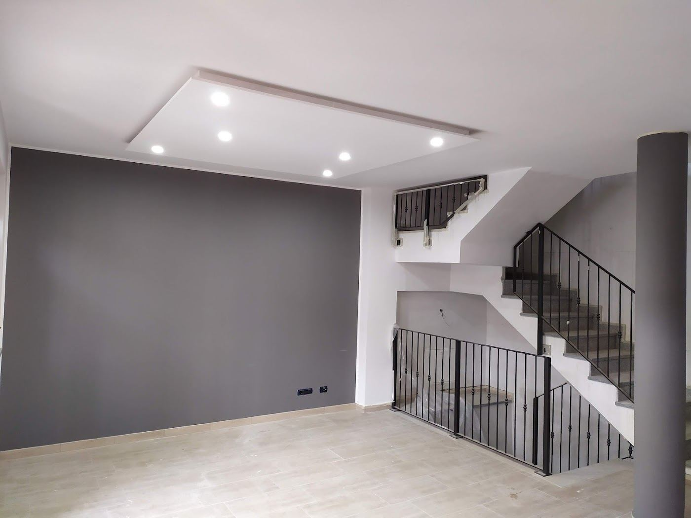
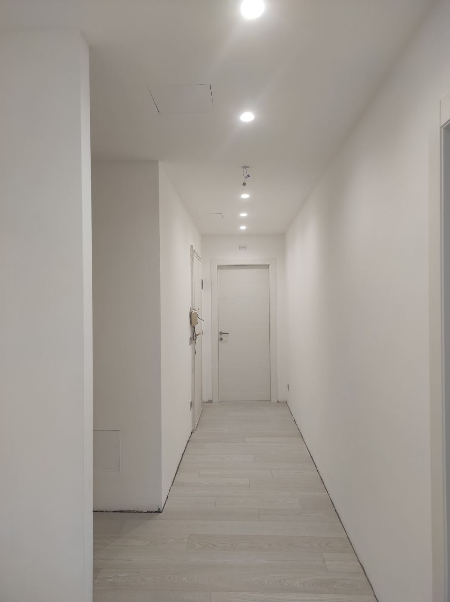
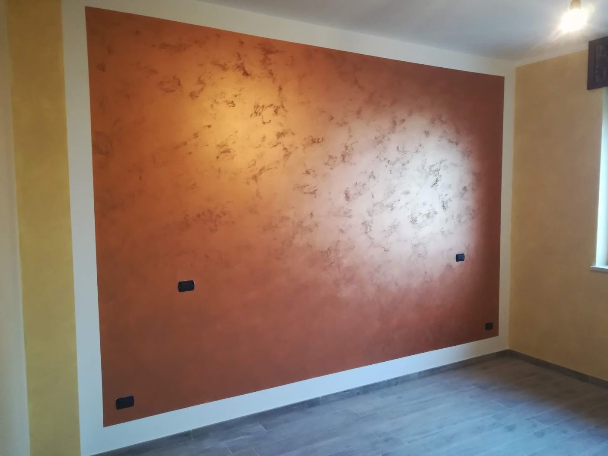
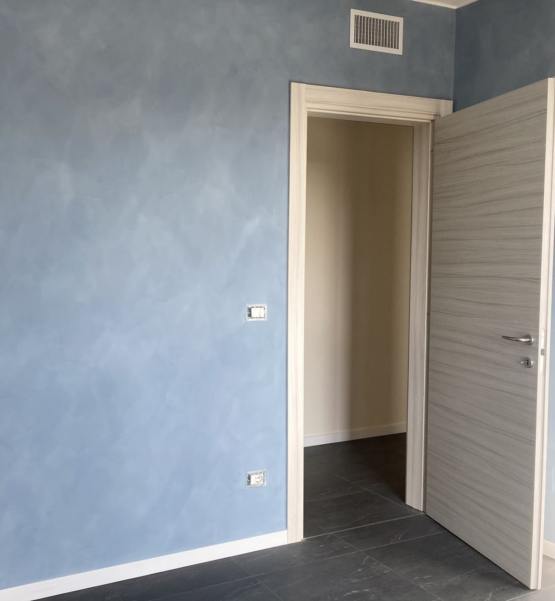
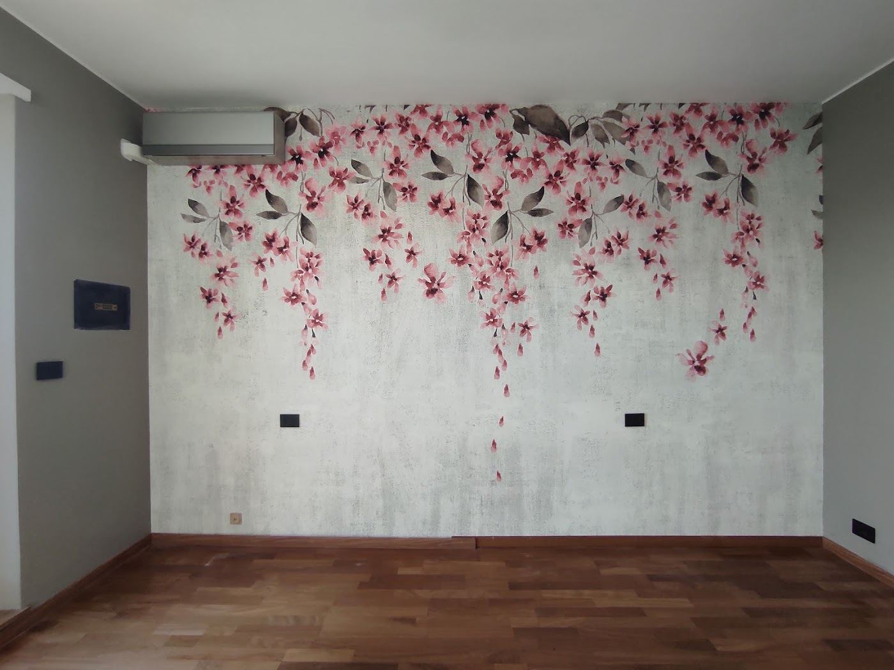
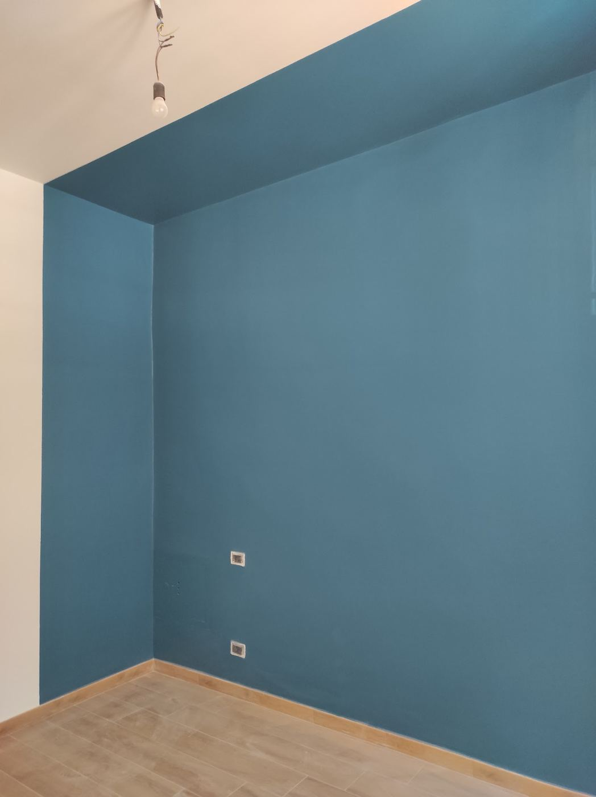
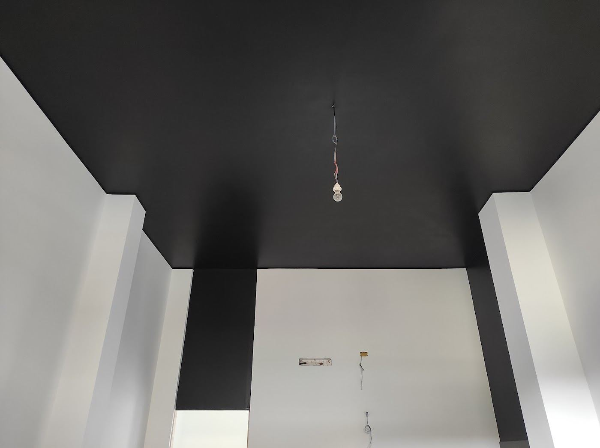
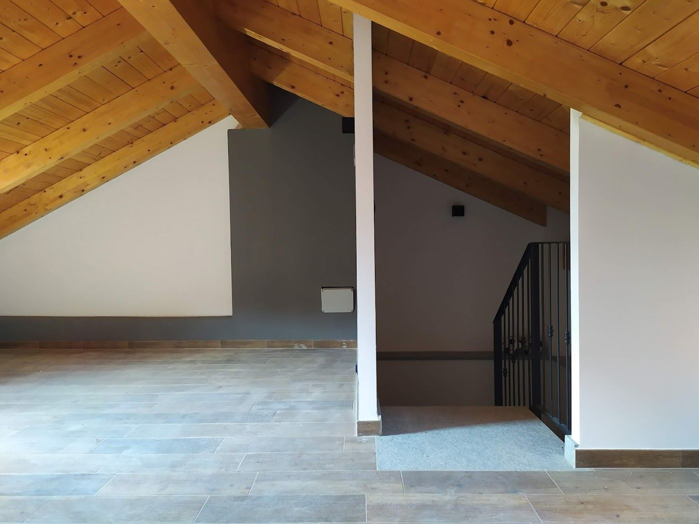
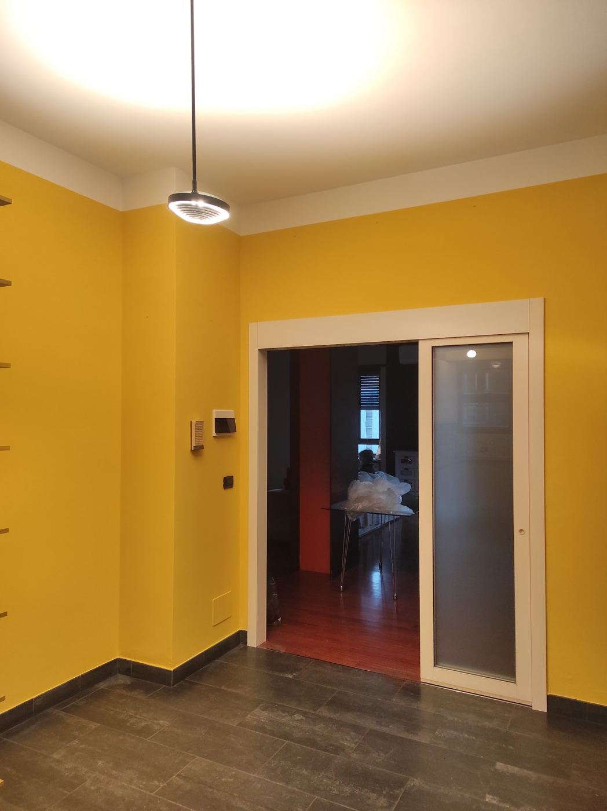
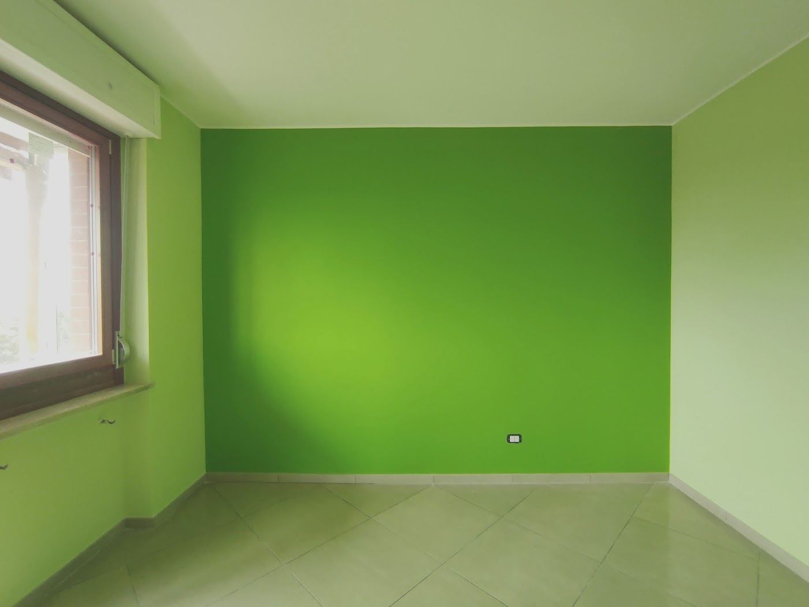

Tinteggio case e appartamenti, realizzo spatolati, velature e pitture alla calce e poso carta da parati. Lavoro con la mia squadra, proteggo pavimenti e mobili e a fine lavoro lascio tutto pulito.

Dalla tinteggiatura di tutta la casa alla singola parete decorata. Qui sotto, lavori fatti davvero.

Pareti e soffitti di stanze singole o di tutta la casa, con un risultato uniforme.

Finiture materiche che danno profondità a una parete o a un intero ambiente.

Effetti sfumati e nuvolati, delicati e mai uguali.

Posa di carte e decori murali, giunte comprese.

Tinte decise e accostamenti, anche sul soffitto, scelti insieme a te.

Smalti murali lavabili, paraschizzi in cucina, intonaco e ritocchi.
Mansarde, ingressi, camere: ogni ambiente col suo colore.



«L’unico punto dolente è non poter mettere 10 stelle per questa recensione. Lavoro eccelso, ragazzo serio, preciso e pulito, nulla da dire a parte l’essere estremamente soddisfatto del lavoro svolto. Christian super top! 🔝»
Francesco Barletta · un anno fa su Google
«Vogliamo esprimere la nostra massima soddisfazione per il lavoro svolto da Christian nella nostra casa. È stato semplicemente impeccabile. Ha tinteggiato tutta l’abitazione con una cura e una precisione rara da trovare, realizzando un risultato uniforme e pulito. Christian ci ha anche realizzato…»
Paolo Cossu · 10 mesi fa su Google
«Ci siamo trovati benissimo, sia come organizzazione dei lavori che come risultato finale… un singolare effetto spatolato con pittura alla calce ♥️»
Paola Genevieve Caratto · un anno fa su Google
Chiamami o mandami su WhatsApp qualche foto delle stanze e due righe su cosa vorresti. Poi fissiamo un sopralluogo.
347 134 4528| Lunedì – venerdì | 8:00 – 19:00 |
| Sabato | 8:00 – 13:00 |
| Domenica | chiuso |
Via Francesco Millio 57, 10141 Torino